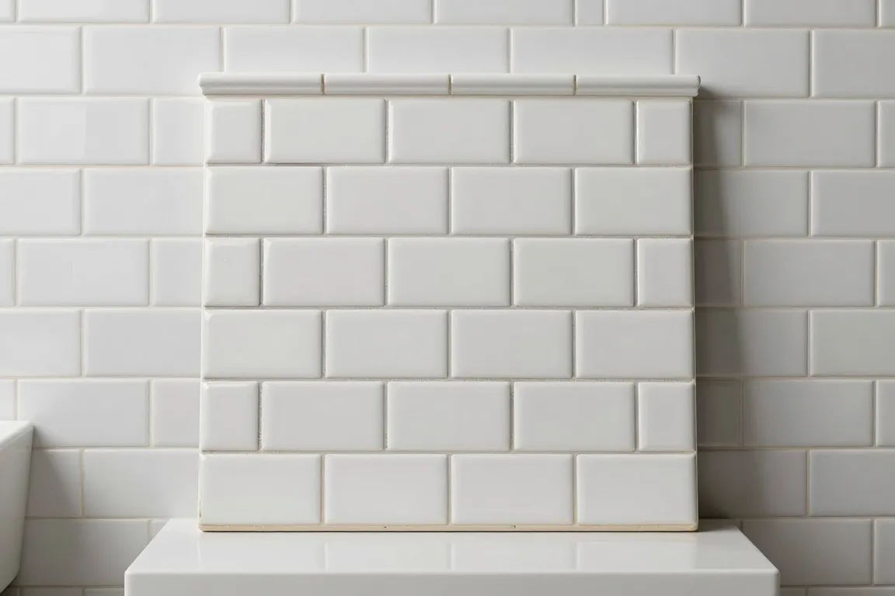

En liten hvit, rektangulær veggflis med blank glasur og skråkant, lagt i murverksforband. Den begynte som et rent, vaskbart trekk i tunneler og stasjoner. Nå er den standardfliset på kjøkken og bad.

Kjerneidé
En hvit, blank og liten flis gir en vegg som er ren, lys og lett å vaske.
Designprinsipper
Gjør fliset til et 2:1-rektangel på 3 ganger 6 tommer, eller omtrent 7,5 ganger 15 cm.
Bruk en hvit glasur med høy glans, 85 til 100 GU, slik at veggen reflekterer lys.
Skråskjær kanten med 1 til 2 mm, slik at hver flis får en myk linje og fugen ikke er flat.
Legg flisene i løpende forband med halv flis forskjøvet, og hold fugene på 2 til 3 mm.
Fyll fugen med en lys eller mørk fugemasse i én farge for å bestemme hvor sterkt rutenettet står.
Legg til et listesett: en bullnose, en avslutning, en sokkel og et hjørnestykke i samme glasur.
Hold veggen enkel; bruk høyst ett fargebånd eller én bort.
Brenn fliset så hardt at glasuren ikke krakelerer og flekker ikke trenger inn.
Antimønstre
En ru, håndlaget flate med bølgete kant
Et trykt mønster på hver flis
En kvadratisk flis i rett forband for et klassisk preg